In this tutorial we will perform a metatranscriptomics analysis based on the ASAIM workflow (Batut et al. 2018), using data from Kunath et al. 2018.
Comment: Two versions of this tutorial
Because this tutorial consists of many steps, we have made two versions of it, one long and one short.
This is the shortened version. Instead of running each tool individually, we will employ
workflows to run groups of analysis steps (e.g. data cleaning) at once. If you would like
more in-depth discussion of each step, please see the longer version of tutorial
You can also switch between the long and short version at the start of any section.
Introduction
Microbiomes play a critical role in host health, disease, and the environment. The study of microbiota and microbial communities has been facilitated by the evolution of technologies, specifically the sequencing techniques. We can now study the microbiome dynamics by investigating the DNA content (metagenomics), RNA expression (metatranscriptomics), protein expression (metaproteomics) or small molecules (metabolomics):
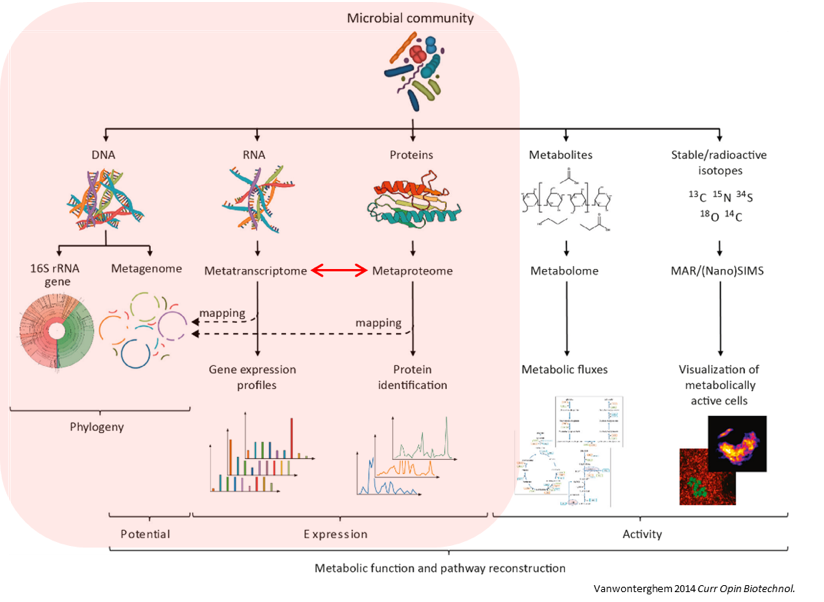
New generations of sequencing platforms coupled with numerous bioinformatic tools have led to a spectacular technological progress in metagenomics and metatranscriptomics to investigate complex microorganism communities. These techniques are giving insight into taxonomic profiles and genomic components of microbial communities. Metagenomics is packed with information about the present taxonomies in a microbiome, but do not tell much about important functions. That is where metatranscriptomics and metaproteomics play a big part.
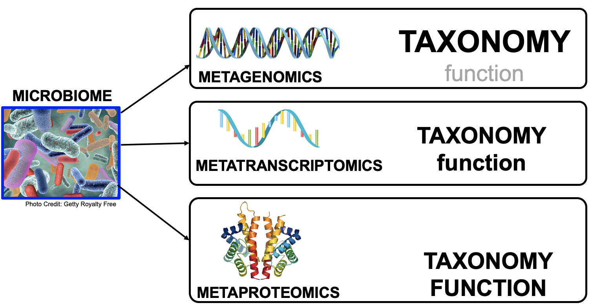
In this tutorial, we will focus on metatranscriptomics.
Metatranscriptomics analysis enables understanding of how the microbiome responds to the environment by studying the functional analysis of genes expressed by the microbiome. It can also estimate the taxonomic composition of the microbial population. It provides scientists with the confirmation of predicted open‐reading frames (ORFs) and potential identification of novel sites of transcription and/or translation from microbial genomes. Furthermore, metatranscriptomics can enable more complete generation of protein sequences databases for metaproteomics.
To illustrate how to analyze metatranscriptomics data, we will use data from time-series analysis of a microbial community inside a bioreactor (Kunath et al. 2018). They generated metatranscriptomics data for 3 replicates over 7 time points. Before amplification the amount of rRNA was reduced by rRNA depletion. The sequencing libray was prepared with the TruSeq stranded RNA sample preparation, which included the production of a cDNA library.
In this tutorial, we focus on biological replicate A of the 1st time point. In a follow-up tutorial we will illustrate how to compare the results over the different time points and replicates. The input files used here are trimmed versions of the original files for the purpose of saving time and resources.
To analyze the data, we will follow the ASaiM workflow and explain it step by step. ASaiM (Batut et al. 2018) is an open-source Galaxy-based workflow that enables microbiome analyses. The workflow offers a streamlined Galaxy workflow for users to explore metagenomic/metatranscriptomic data in a reproducible and transparent environment. The ASaiM workflow has been updated by the GalaxyP team (University of Minnesota) to perform metatranscriptomics analysis of large microbial datasets (Mehta et al. 2021).
The workflow described in this tutorial takes in paired-end datasets of raw shotgun sequences (in FastQ format) as an input and proceeds to:
Preprocess the reads
Extract and analyze the community structure (taxonomic information)
Extract and analyze the community functions (functional information)
Combine taxonomic and functional information to offer insights into the taxonomic contribution to a function or functions expressed by a particular taxonomy.
A graphical representation of the ASaiM workflow which we will be using today is given below:
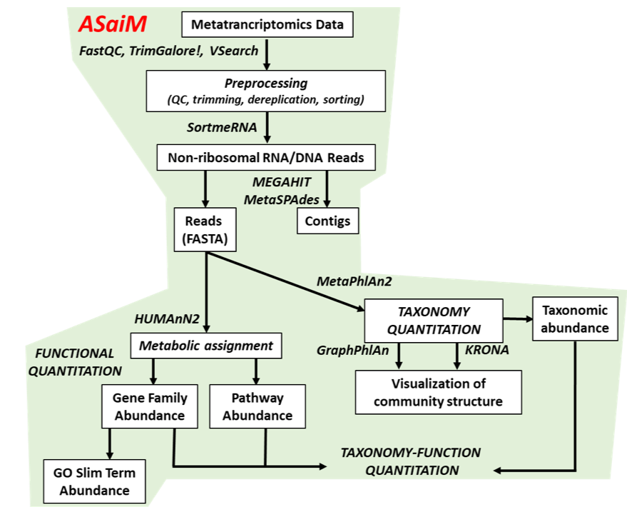
Comment: Workflow also applicable to metagenomics data
The approach with the tools described here can also be applied to metagenomics data. What will change are the quality control profiles and the proportion of rRNA sequences.
Create a new history for this tutorial and give it a proper name
To create a new history simply click the new-history icon at the top of the history panel:
Click on galaxy-pencil (Edit) next to the history name (which by default is “Unnamed history”)
Type the new name
Click on Save
To cancel renaming, click the galaxy-undo “Cancel” button
If you do not have the galaxy-pencil (Edit) next to the history name (which can be the case if you are using an older version of Galaxy) do the following:
Click on Unnamed history (or the current name of the history) (Click to rename history) at the top of your history panel
Type the new name
Press Enter
ImportT1A_forward and T1A_reverse from Zenodo or from the data library (ask your instructor)
Before starting any analysis, it is always a good idea to assess the quality of your input data and improve it where possible by trimming and filtering reads.
In this section we will run a workflow that performs the following tasks:
Assess read quality using FastQCtool and MultiQCtool
Filter reads by length and quality using Cutadapttool
Remove ribosomal RNA (rRNA) using SortMeRNAtool
Combine the high-quality reads into a single interlaced FastQ file for downstream analysis using FastQ interlacertool
We will run all these steps using a single workflow, then discuss each step and the results in more detail.
Hands-on: Pretreatments
Import the workflow into Galaxy
Copy the URL (e.g. via right-click) of this workflow or download it to your computer.
Import the workflow into Galaxy
Click on Workflow on the top menu bar of Galaxy. You will see a list of all your workflows.
Click on galaxy-uploadImport at the top-right of the screen
Provide your workflow
Option 1: Paste the URL of the workflow into the box labelled “Archived Workflow URL”
Option 2: Upload the workflow file in the box labelled “Archived Workflow File”
Click the Import workflow button
Below is a short video demonstrating how to import a workflow from GitHub using this procedure:
Video: Importing a workflow from URL
Run Workflow 1: Preprocessingworkflow using the following parameters:
“Send results to a new history”: No
param-file“1: Forward FastQ file”: T1A_forward
param-file“2: Reverse FastQ file”: T1A_reverse
Click on Workflow on the top menu bar of Galaxy. You will see a list of all your workflows.
Click on the workflow-run (Run workflow) button next to your workflow
Configure the workflow as needed
Click the Run Workflow button at the top-right of the screen
You may have to refresh your history to see the queued jobs
The workflow will take a little while to complete. Once tools have completed, the results will be available in your history for viewing. Note that only the most important outputs will he visible; intermediate files are hidden by default.
While you wait for the workflow to complete, please continue reading, in the next section(s) we will go into a bit more detail about what happens in each step of this workflow and examine the results.
Quality control
During sequencing, errors are introduced, such as incorrect nucleotides being called. These are due to the technical limitations of each sequencing platform. Sequencing errors might bias the analysis and can lead to a misinterpretation of the data.
Sequence quality control is therefore an essential first step in your analysis.
In this tutorial we use similar tools as described in the tutorial “Quality control”:
FastQC generates a web report that will aid you in assessing the quality of your data
MultiQC combines multiple FastQC reports into a single overview report
For more information about how to interpret the plots generated by FastQC and MultiQC, please see this section in our dedicated Quality Control Tutorial.
Question
Inspect the webpage output from MultiQC
How many sequences does each file has?
How is the quality score over the reads? And the mean score?
Is there any bias in base content?
How is the GC content?
Are there any unindentified bases?
Are there duplicated sequences?
Are there over-represented sequences?
Are there still some adapters left?
What should we do next?
Both files have 260,554 sequences
The “Per base sequence quality” is globally good: the quality stays around 40 over the reads, with just a slight decrease at the end (but still higher than 35)
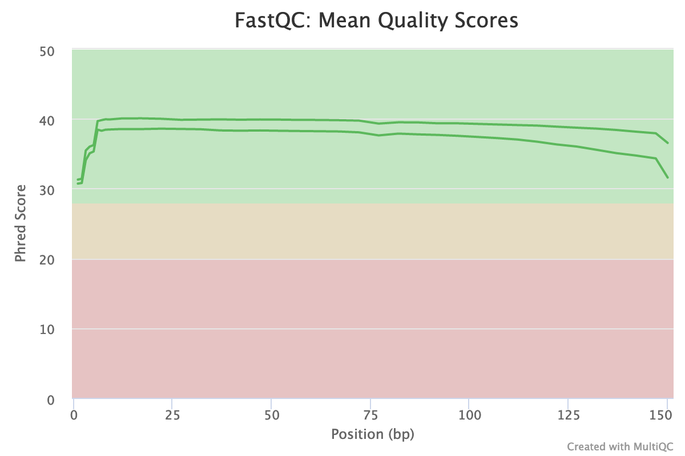
The reverse reads have a slight worst quality than the forward, a usual case in Illumina sequencing.
The distribution of the mean quality score is almost at the maximum for the forward and reverse reads:
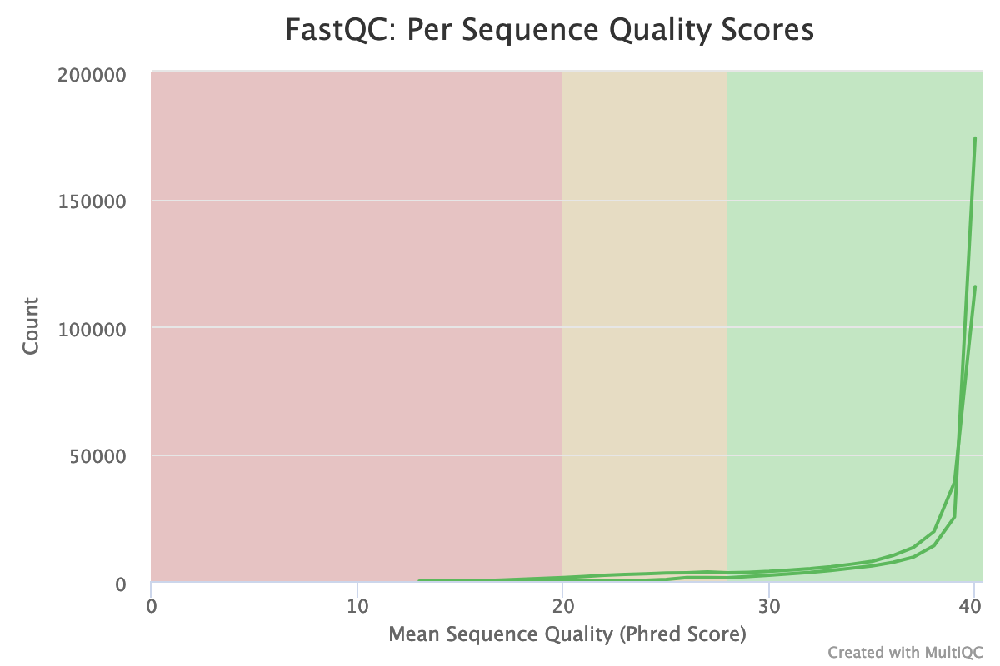
For both forward and reverse reads, the percentage of A, T, C, G over sequence length is biased. As for any RNA-seq data or more generally libraries produced by priming using random hexamers, the first 10-12 bases have an intrinsic bias.
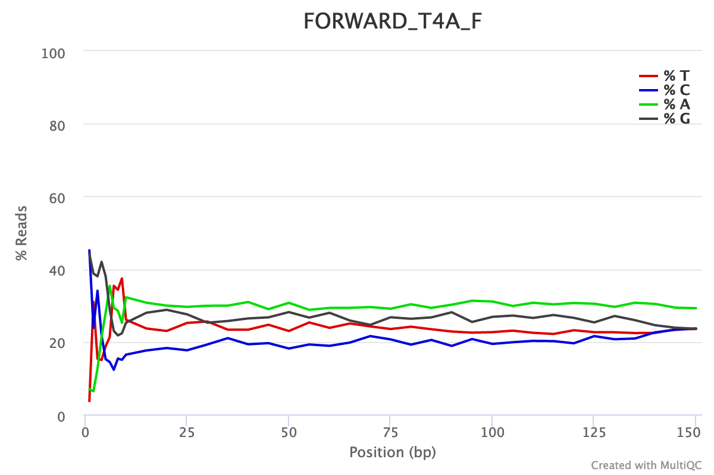
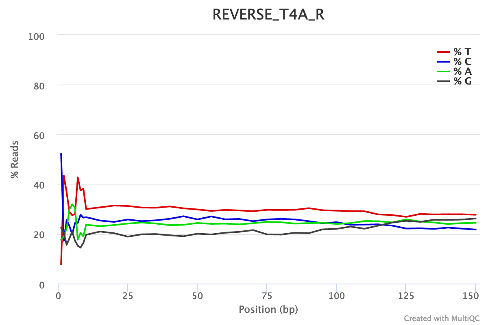
We could also see that after these first bases the distinction between C-G and A-T groups is not clear as expected. It explains the error raised by FastQC.
With sequences from random position of a genome, we expect a normal distribution of the %GC of reads around the mean %GC of the genome. Here, we have RNA reads from various genomes. We do not expect a normal distribution of the %GC. Indeed, for the forward reads, the distribution shows with several peaks: maybe corresponding to mean %GC of different organisms.
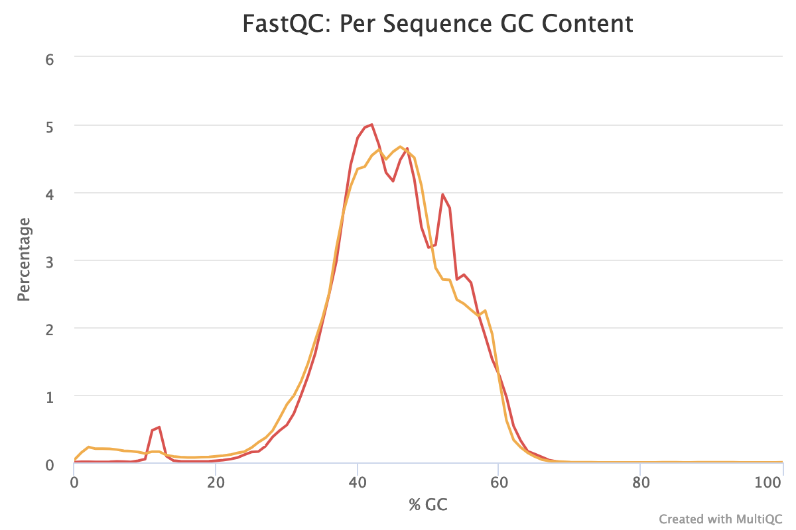
Almost no N were found in the reads: so almost no unindentified bases
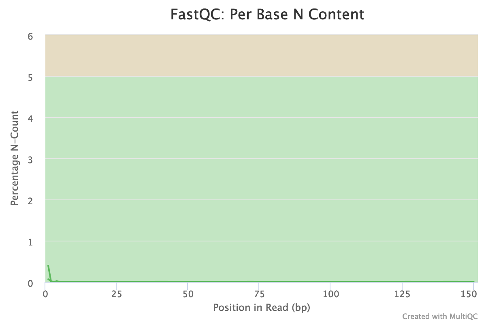
The forward reads seem to have more duplicated reads than the reverse reads with a rate of duplication up to 60% and some reads identified over 10 times.
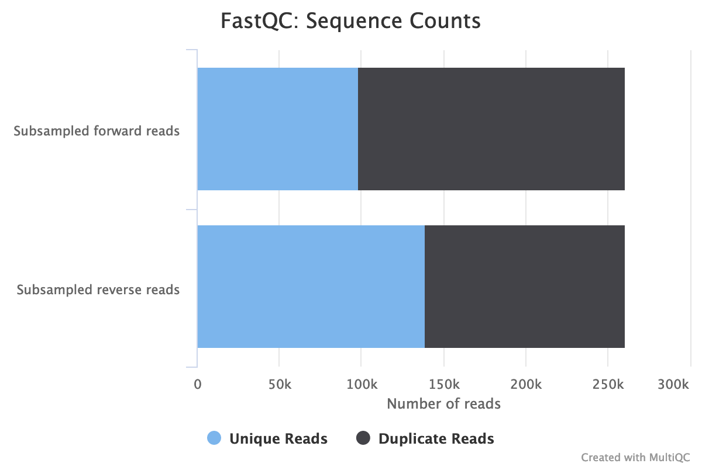
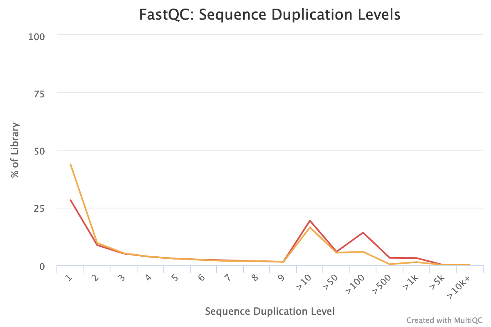
In data from RNA (metatranscriptomics data), duplicated reads are expected. The low rate of duplication in reverse reads could be due to bad quality: some nucleotides may have been wrongly identified, altering the reads and reducing the duplication.
The high rate of overrepresented sequences in the forward reads is linked to the high rate of duplication.
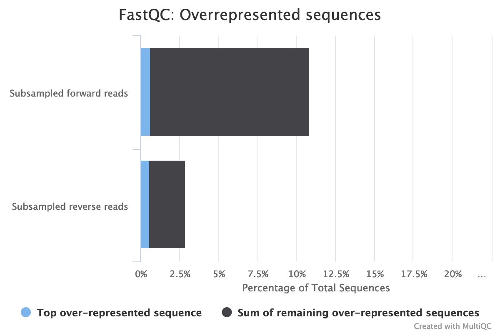
Illumina universal adapters are still present in the reads, especially at the 3’ end.
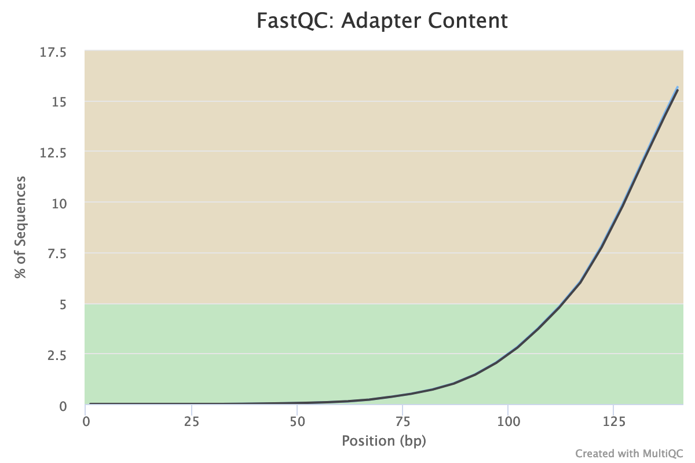
After checking what is wrong, we should think about the errors reported by FastQC: they may come from the type of sequencing or what we sequenced (check the “Quality control” training: FastQC for more details): some like the duplication rate or the base content biases are due to the RNA sequencing. However, despite these challenges, we can still get slightly better sequences for the downstream analyses.
Even though our data is already of pretty high quality, we can improve it even more by:
Trimming reads to remove bases that were sequenced with low certainty (= low-quality bases) at the ends of the reads
Removing reads of overall bad quality
Removing reads that are too short to be informative in downstream analysis
Question
What are the possible tools to perform such functions?
There are many tools such as Cutadapt, Trimmomatic, Trim Galore, Clip, trim putative adapter sequences. etc. We choose here Cutadapt because it is error tolerant, it is fast and the version is pretty stable.
There are several tools out there that can perform these steps, but in this analysis we use Cutadapt (Martin 2011).
Cutadapt also helps find and remove adapter sequences, primers, poly-A tails and/or other unwanted sequences from the input FASTQ files. It trims the input reads by finding the adapter or primer sequences in an error-tolerant way. Additional features include modifying and filtering reads.
Cutadapttool outputs a report file containing some information about the trimming and filtering it performed.
Question
Inspect the output report from Cutadapttool.
How many basepairs have been removed from the forwards reads because of bad quality? And from the reverse reads?
How many sequence pairs have been removed because at least one read was shorter than the length cutoff?
203,654 bp has been trimmed for the forward read (read 1) and 569,653 bp bp on the reverse (read 2). It is not a surprise: we saw that at the end of the sequences the quality was dropping more for the reverse reads than for the forward reads.
27,677 (10.6%) reads were too short after trimming and then filtered.
Ribosomal RNA fragments filtering
Metatranscriptomics sequencing targets any RNA in a pool of micro-organisms. The highest proportion of RNA sequences in any organism will be ribosomal RNAs.
These rRNAs are useful for the taxonomic assignment (i.e. which organisms are found) but they do not provide any functional information, (i.e. which genes are expressed). To make the downstream functional annotation faster, we will sort the rRNA sequences using SortMeRNA (Kopylova et al. 2012). It can handle large RNA databases and sort out all fragments matching to the database with high accuracy and specificity:
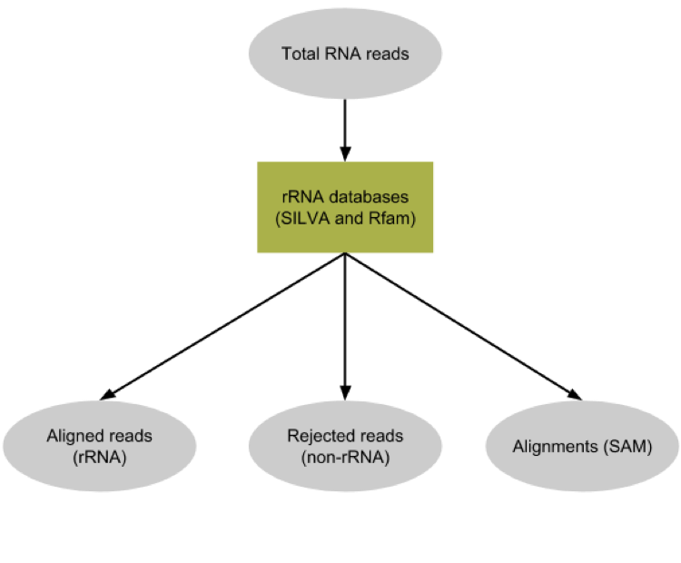
SortMeRNAtool removes any reads identified as rRNA from our dataset, and outputs a log file with more information about this filtering.
Question
Inspect the log output from SortMeRNAtool, and scroll down to the Results section.
How many reads have been processed?
How many reads have been identified as rRNA given the log file?
Which type of rRNA are identified? Which organisms are we then expected to identify?
465,754 reads are processed: 232,877 for forward and 232,877 for reverse (given the Cutadapt report)
Out of the 465,754 reads, 119,646 (26%) have passed the e-value threshold and are identified as rRNA.
The proportion of rRNA sequences is then quite high (around 40%), compared to metagenomics data where usually they represent < 1% of the sequences. Indeed there are only few copies of rRNA genes in genomes, but they are expressed a lot for the cells.
Some of the aligned reads are forward (resp. reverse) reads but the corresponding reverse (resp. forward) reads are not aligned. As we choose “If one of the paired-end reads aligns and the other one does not”: Output both reads to rejected file (--paired_out), if one read in a pair does not align, both go to unaligned.
The 20.56% rRNA reads are 23S bacterial rRNA, 2.34% 16S bacterial rRNA and 1.74% 18S eukaryotic rRNA. We then expect to identify mostly bacteria but also probably some archae (18S eukaryotic rRNA).
Interlace forward and reverse reads
The tool for functional annotations needs a single file as input, even with paired-end data.
We need to join the two separate files (forward and reverse) to create a single interleaced file, using FASTQ interlacer, in which the forward reads have /1 in their id and reverse reads /2. The join is performed using sequence identifiers (headers), allowing the two files to contain differing ordering. If a sequence identifier does not appear in both files, it is output in a separate file named singles.
We use FASTQ interlacer on the unaligned (non-rRNA) reads from SortMeRNA to prepare for the functional analysis.
The first important information to get from microbiome data is the community structure: which organisms are present and in which abundance. This is called taxonomic profiling.
Different approaches can be used:
Identification and classification of Operational Taxonomic Units OTUs, as used in amplicon data
Such an approach first requires sequence sorting to extract only the 16S and 18S sequences (e.g. using the aligned reads from SortMeRNA), then again using the same tools as for amplicon data (as explained in tutorials like 16S Microbial Analysis with mothur or 16S Microbial analysis with Nanopore data).
However, because rRNA sequences represent less than 50% of the raw sequences, this approach is not the most statistically supported.
Assignment of taxonomy on the whole sequences using databases with marker genes
In this tutorial, we follow second approach using MetaPhlAn (Truong et al. 2015). This tool uses a database of ~1M unique clade-specific marker genes (not only the rRNA genes) identified from ~17,000 reference (bacterial, archeal, viral and eukaryotic) genomes.
As rRNAs reads are good marker genes, we will use directly the quality controlled files (output of Cutadapt) with all reads (not only the non rRNAs).
Hands-on: Community Profile
Import the workflow into Galaxy
Copy the URL (e.g. via right-click) of this workflow or download it to your computer.
Import the workflow into Galaxy
Click on Workflow on the top menu bar of Galaxy. You will see a list of all your workflows.
Click on galaxy-uploadImport at the top-right of the screen
Provide your workflow
Option 1: Paste the URL of the workflow into the box labelled “Archived Workflow URL”
Option 2: Upload the workflow file in the box labelled “Archived Workflow File”
Click the Import workflow button
Below is a short video demonstrating how to import a workflow from GitHub using this procedure:
Video: Importing a workflow from URL
Run Workflow 2: Community Profileworkflow using the following parameters:
“Send results to a new history”: No
param-file“1: QC controlled forward reads”: QC controlled forward reads output from the first workflow
param-file“2: QC controlled reverse reads”: QC controlled reverse reads output from the first workflow
Click on Workflow on the top menu bar of Galaxy. You will see a list of all your workflows.
Click on the workflow-run (Run workflow) button next to your workflow
Configure the workflow as needed
Click the Run Workflow button at the top-right of the screen
You may have to refresh your history to see the queued jobs
5 files and a collection are generated by MetaPhlAntool:
The main output: A tabular file called Predicted taxon relative abundances with the *community profile
The analysis shows indeed, that only bacteria can be found in our sample.
A collection with the same information as in the tabular file but splitted into different files, one per taxonomic level
A tabular file called Predicted taxon relative abundances for Krona with the same information as the previous file but formatted for visualization using Krona. We will use this file later
A BIOM file with the same information as the previous file but in BIOM format
BIOM format is quite common in microbiomics. This is standard, for example, as the input for tools like mothur or QIIME.
A SAM file with the results of the sequence mapping on the reference database.
A tabular file called Bowtie2 output with similar information as the one in the SAM file
Comment: Analyzing an isolated metatranscriptome
We are analyzing our RNA reads as we would do for DNA reads. This approach has one main caveat. In MetaPhlAn, the species are quantified based on the recruitment of reads to species-specific marker genes. In metagenomic data, each genome copy is assumed to donate ~1 copy of each marker. But the same assumption cannot be made for RNA data: markers may be transcribed more or less within a given species in this sample compared to the average transcription rate. A species will still be detected in the metatranscriptomic data as long as a non-trivial fraction of the species’ markers is expressed.
We should then carefully interpret the species relative abundance. These values reflect species’ relative contributions to the pool of species-specific transcripts and not the overall transcript pool.
Community structure visualization
Even if the output of MetaPhlAn can be easy to parse, we want to visualize and explore the community structure. 2 tools can be used there:
Krona for an interactive HTML output
Graphlan for a publication ready visualization
KronaOndov et al. 2011 renders results of a metagenomic profiling as a zoomable pie chart. It allows hierarchical data, here taxonomic levels, to be explored with zooming, multi-layered pie charts
Question
Inspect the output from Kronatool. (The interactive plot is also shown below)
What are the abundances of the 2 bacterial subclasses identified here?
When zooming on Acetivibrio thermocellus, what are the abundances of the specific strain ?
Acetivibrio thermocellus represents 68% and Coprothermobacter proteolyticus 32% of the bacteria identified in our sample
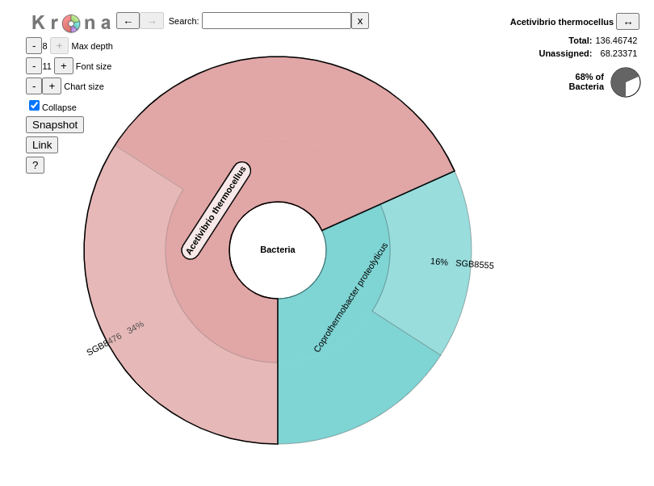
34% of bacteria are from the strian SGB8476.
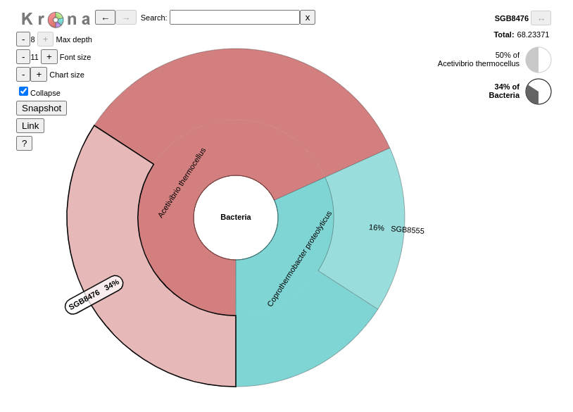
GraPhlAn is another software tool for producing high-quality circular representations of taxonomic and phylogenetic trees.
We would now like to answer the question “What are the micro-organisms doing?” or “Which functions are performed by the micro-organisms in the environment?”.
In the metatranscriptomics data, we have access to the genes that are expressed by the community. We can use that to identify genes, assing their functions, and build pathways, etc., to investigate their contribution to the community using HUMAnN (Franzosa et al. 2018). HUMAnN is a pipeline developed for efficiently and accurately profiling the presence/absence and abundance of microbial pathways in a community from metagenomic or metatranscriptomic sequencing data.
To identify the functions made by the community, we do not need the rRNA sequences, since they do not contain gene coding regions and will slow the run. We will use the output of SortMeRNA, but also the identified community profile from MetaPhlAn. This will help HUMAnN to focus on the known sequences for the identified organisms.
Hands-on: Functional Information
Import the workflow into Galaxy
Copy the URL (e.g. via right-click) of this workflow or download it to your computer.
Import the workflow into Galaxy
Click on Workflow on the top menu bar of Galaxy. You will see a list of all your workflows.
Click on galaxy-uploadImport at the top-right of the screen
Provide your workflow
Option 1: Paste the URL of the workflow into the box labelled “Archived Workflow URL”
Option 2: Upload the workflow file in the box labelled “Archived Workflow File”
Click the Import workflow button
Below is a short video demonstrating how to import a workflow from GitHub using this procedure:
Video: Importing a workflow from URL
Run Workflow 3: Functional Informationworkflow using the following parameters:
“Send results to a new history”: No
param-file“1: Interlaced non-rRNA reads”: Interlaced non-rRNA reads output from the first workflow
param-file“2: Community Profile”: Predicted taxon relative abundances output from the second workflow
Click on Workflow on the top menu bar of Galaxy. You will see a list of all your workflows.
Click on the workflow-run (Run workflow) button next to your workflow
Configure the workflow as needed
Click the Run Workflow button at the top-right of the screen
You may have to refresh your history to see the queued jobs
The first step of this workflow (HUMAnNtool) may take quite a bit of time to complete (> 45 min). If you would like to run through this tutorial a bit faster, you can download the output of this step first, and then run the rest of the workflow. Instructions are given below:
Import the workflow into Galaxy
Copy the URL (e.g. via right-click) of this workflow or download it to your computer.
Import the workflow into Galaxy
Import the following 2 files (these are the outputs from HUMAnNtool):
This file details the abundance of each gene family in the community. Gene families are groups of evolutionarily-related protein-coding sequences that often perform similar functions. Here we used UniRef90 gene families: sequences in a gene families have at least 90% sequence identity.
Gene family abundance at the community level is stratified to show the contributions from known and unknown species. Individual species’ abundance contributions sum to the community total abundance.
Gene family abundance is reported in RPK (reads per kilobase) units to normalize for gene length. It reflects the relative gene (or transcript) copy number in the community.
The “UNMAPPED” value is the total number of reads which remain unmapped after both alignment steps (nucleotide and translated search). Since other gene features in the table are quantified in RPK units, “UNMAPPED” can be interpreted as a single unknown gene of length 1 kilobase recruiting all reads that failed to map to known sequences.
Question
Inspect the Gene families and their abundances file from HUMAnNtool
What is the most abundant family?
Which species is involved in production of this family?
How many gene families have been identified?
The most abundant family is the first one in the family: UniRef90_A3DCI4. We can use the tool Rename features of a HUMAnN generated table ( Galaxy version 3.7+galaxy0) to add extra information about the gene family.
“Type of feature renaming”: Advanced feature renaming
“Features to be renamed”: Mapping (full) between UniRef90 ids and names
Unfortunaly the most abundant family cannot be mapped (common for many UniRef90/50 families). It can be found however using UniRef90 gene families directly. The (2Fe-2S) ferredoxin domain-containing protein seems to be produced mostly by Hungateiclostridium thermocellum.
There is 6,392 lines in gene family file. But some of the gene families have multiple lines when the involved species are known.
To know the number of gene families, we need to remove all lines with the species information, i.e. lines with | in them using the tool Split a HUMAnN table ( Galaxy version 3.7+galaxy0)
The tool generates 2 output file:
a stratified table with all lines with | in them
a unstratied table with all lines without | in them
In the unstratified table, there are 3,184 lines, so 3,183 gene families.
A tabular file with the pathways and their abundance:
# Pathway humann_Abundance
UNMAPPED 21383.0328532606
UNINTEGRATED 123278.2617863865
UNINTEGRATED|g__Hungateiclostridium.s__Hungateiclostridium_thermocellum 114029.8324087679
UNINTEGRATED|unclassified 6301.1699240597
UNINTEGRATED|g__Coprothermobacter.s__Coprothermobacter_proteolyticus 5407.2826151090
PWY-6609: adenine and adenosine salvage III 285.7955913866
PWY-6609: adenine and adenosine salvage III|g__Hungateiclostridium.s__Hungateiclostridium_thermocellum 66.3688569288
PWY-1042: glycolysis IV 194.7465938041
This file shows each pathway and their abundance. Here, we used the MetaCyc Metabolic Pathway Database, a curated database of experimentally elucidated metabolic pathways from all domains of life.
The abundance of a pathway in the sample is computed as a function of the abundances of the pathway’s component reactions, with each reaction’s abundance computed as the sum over abundances of genes catalyzing the reaction. The abundance is proportional to the number of complete “copies” of the pathway in the community. Indeed, for a simple linear pathway RXN1 --> RXN2 --> RXN3 --> RXN4, if RXN1 is 10 times as abundant as RXNs 2-4, the pathway abundance will be driven by the abundances of RXNs 2-4.
The pathway abundance is computed once for all species (community level) and again for each species using species gene abundances along the components of the pathway. Unlike gene abundance, a pathway’s abundance at community-level is not necessarily the sum of the abundance values of each species. For example, for the same pathway example as above, if the abundances of RXNs 1-4 are [5, 5, 10, 10] in Species A and [10, 10, 5, 5] in Species B, the pathway abundance would be 5 for Species A and Species B, but 15 at the community level as the reaction totals are [15, 15, 15, 15].
Question
View the Pathways and their abundance output from HUMAnNtool
What is the most abundant pathway?
Which species is involved in production of this pathway?
How many pathways have been identified?
What is the “UNINTEGRATED” abundance?
The most abundant pathway is PWY-6609. It produces the adenine and adenosine salvage III.
Like the gene family, this pathway is mostly achieved by Hungateiclostridium thermocellum.
There are 115 lines in the pathway file, including the lines with species information. To compute the number of pathways, we need to apply a similar approach as for the gene families by removing the lines with | in them using the tool Split a HUMAnN table ( Galaxy version 3.7+galaxy0).
The unstratified output file has 62 lines, including the header, UNMAPPED and UNINTEGRATED. Therefore, 59 MetaCyc pathways have been identified for our sample.
The “UNINTEGRATED” abundance corresponds to the total abundance of genes in the different levels that do not contribute to any pathways.
A file with the pathways and their coverage:
Pathway coverage provides an alternative description of the presence (1) and absence (0) of pathways in a community, independent of their quantitative abundance.
A log file
Comment: Analyzing an isolated metatranscriptome
As we already mentioned above, we are analyzing our RNA reads as we would do for DNA reads and therefore we should be careful when interpreting the results. We already mentioned the analysis of the species’ relative abundance from MetaPhlAn, but there is another aspect we should be careful about.
From a lone metatranscriptomic dataset, the transcript abundance can be confounded with the underlying gene copy number. For example, transcript X may be more abundant in sample A relative to sample B because the underlying X gene (same number in both samples) is more highly expressed in sample A relative to sample B; or there are more copies of gene X in sample A relative to sample B (all of which are equally expressed). This is a general challenge in analyzing isolated metatranscriptomes.
The best approach would be to combine the metatranscriptomic analysis with a metagenomic analysis. In this case, rather than running MetaPhlAn on the metatranscriptomic data, we run it on the metagenomic data and use the taxonomic profile as input to HUMAnN. RNA reads are then mapped to any species’ pangenomes detected in the metagenome. Then we run HUMAnN on both metagenomics and metatranscriptomic data. We can use both outputs to normalize the RNA-level outputs (e.g. transcript family abundance) by corresponding DNA-level outputs to the quantification of microbial expression independent of gene copy number.
Here we do not have a metagenomic dataset to combine with and need to be careful in our interpretation.
Normalize the abundances
Gene family and pathway abundances are in RPKs (reads per kilobase), accounting for gene length but not sample sequencing depth. While there are some applications, e.g. strain profiling, where RPK units are superior to depth-normalized units, most of the time we need to renormalize our samples prior to downstream analysis.
Question
Inspectgalaxy-eye the Normalized gene families file
What percentage of sequences has not been assigned to a gene family?
What is the relative abundance of the most abundant gene family?
13.9% (0.139005 x 100) of the sequences have not be assigned to a gene family.
The UniRef90_A3DCI4 family represents 6% of the reads.
Question
Inspectgalaxy-eye the Normalized pathways file.
What is the UNMAPPED percentage?
What percentage of reads assigned to a gene family has not be assigned to a pathway?
What is the relative abundance of the most abundant gene family?
UNMAPPED, here 13.9% of the reads, corresponds to the percentage of reads not assigned to gene families. It is the same value as in the normalized gene family file.
81% (UNINTEGRATED) of reads assigned to a gene family have not be assigned to a pathway
The PWY-6609 pathway represents 0.46% of the reads.
Identify the gene families involved in the pathways
We would like to know which gene families are involved in our most abundant pathways and which species.
For this, we use the tool Unpack pathway abundances to show genes includedtool from HUMAnN tool suites.
This tool unpacks the pathways to show the genes for each. It adds another level of stratification to the pathway abundance table by including the gene family abundances:
Inspectgalaxy-eye the output from Unpack pathway abundances to show genes includedtool
Which gene families are involved in the PWY-6609 pathway (the most abundant one)? And which species?
If we search the generated file for (using CTRF or CMDF):
PWY-6609: adenine and adenosine salvage III 0.00192972
PWY-6609|g__Hungateiclostridium.s__Hungateiclostridium_thermocellum 0.000448128
PWY-6609|g__Hungateiclostridium.s__Hungateiclostridium_thermocellum|UniRef90_A3DD28 4.47176e-05
PWY-6609|g__Hungateiclostridium.s__Hungateiclostridium_thermocellum|UniRef90_A3DHM7 0.000235689
PWY-6609|g__Hungateiclostridium.s__Hungateiclostridium_thermocellum|UniRef90_A3DEQ4 3.68298e-05
The gene families UniRef90_A3DD28, UniRef90_A3DHM7 and UniRef90_A3DEQ4 are identified, for Hungateiclostridium thermocellum.
Group gene families into GO terms
The gene families can be a long list of ids and going through the gene families one by one to identify the interesting ones can be cumbersome. To help construct a big picture, we could identify and use categories of genes using the gene families.
Gene Ontology (GO) analysis is widely used to reduce complexity and highlight biological processes in genome-wide expression studies. There is a dedicated tool which groups and converts UniRef50 gene family abundances generated with HUMAnN into GO terms.
The output is a table with the GO terms, their abundance and the involved species:
Using the tool Split a HUMAnN table ( Galaxy version 3.6.0+galaxy0), we see that the unstratified table has 1,174 lines (including the UNMAPPED, UNGROUPED and the header). So 1,171 GO terms have been identified.
Question
Inspectgalaxy-eye the 3 outputs of these steps
How many GO terms have been identified?
Which of the GO terms related to molecular functions is the most abundant?
After running Split a HUMAnN table ( Galaxy version 3.6.0+galaxy0) on the 3 outputs, we found:
411 BP GO terms
696 MF GO terms
58 CC GO terms
The GO terms in the [MF] GO terms and their abundance file are not sorted by abundance:
So to identify the most abundant GO terms, we first need to sort the file using the Sort data in ascending or descending order ( Galaxy version 1.1.1) tool (on column 2, in descending order):
GO:0015035: [MF] protein disulfide oxidoreductase activity 42908.123
GO:0003735: [MF] structural constituent of ribosome 42815.337
GO:0015035: [MF] protein disulfide oxidoreductase activity|g__Hungateiclostridium.s__Hungateiclostridium_thermocellum 40533.997
GO:0005524: [MF] ATP binding 37028.271
GO:0046872: [MF] metal ion binding 31068.144
The most abundant GO terms related to molecular functions seem to be linked to protein disulfide oxidoreductase activity, but also to structural constituent of ribosome and ATP and metal ion binding.
Combine taxonomic and functional information
With MetaPhlAn and HUMAnN, we investigated “Which micro-organims are present in my sample?” and “What functions are performed by the micro-organisms in my sample?”. We can go further in these analyses, for example using a combination of functional and taxonomic results. Although we did not detail that in this tutorial you can find more methods of analysis in our tutorials on shotgun metagenomic data analysis.
Although gene families and pathways, and their abundance may be related to a species, in the HUMAnN output, relative abundance of the species is not indicated. Therefore, for each gene family/pathway and the corresponding taxonomic stratification, we will now extract the relative abundance of this gene family/pathway and the relative abundance of the corresponding species and genus.
Comment: Disagreemnet between MetaPhlAn and HUMAnN database
When updating this tutorial we found, that in the combined table we can only find
the specis Coprothermobacter_proteolyticus, although
we know from the HUMAnN output that most gene families are associated to the species
of Hungateiclostridium_thermocellum. An inspection of the uniprot
entry showed, that the scientific name
of Hungateiclostridium thermocellum is Acetivibrio thermocellus, which is
the most abundant species found by MetaPhlAn. It can therefore be assumed,
that the databases for HUMAnN and MetaPhlAn are not yet synchronized
for all updates of taxonomic names. Hence, the gene family abundancy of the species
Hungateiclostridium_thermocellum from the HUMAnN output cannot be combined
with the species abundancy of the MetaPhlAn output due to different
naming conventions.
To overcome this discrepancy, the naming of Hungateiclostridium_thermocellum must be changed in the
HUMAnN output, this can be done with:
Replace parts of text ( Galaxy version 1.1.4)
with the following parameters:
param-file“File to process”: Normalized gene families
Are there gene families associated with each genus identified with MetaPhlAn?
How many gene families are associated to each genus?
Are there gene families associated to each species identified with MetaPhlAn?
How many gene families are associated to each species?
To answer the questions, we need to group the contents of the output of Combine MetaPhlAn2 and HUMAnN2 outputs by 1st column and count the number of occurrences of gene families. We do that using Group data by a columntool:
Hands-on: Group by genus and count gene families
Group data by a column
“Select data”: output of Combine MetaPhlAn2 and HUMAnN2 outputs
“Group by column”: Column:1
“Operation”:
Click on param-repeat“Insert Operation”
“Type”: Count
“On column”: Column:5
With MetaPhlAn, we identified 2 genus (Coprothermobacter and Acetivibrio). Both can be found in the combined output.
1,890 gene families are associated to Hungateiclostridium and 351 to Coprothermobacter.
For this question, we should group on the 3rd column:
Hands-on: Group by species and count gene families
Group data by a column
“Select data”: output of Combine MetaPhlAn2 and HUMAnN2 outputs
“Group by column”: Column:3
“Operation”:
Click on param-repeat“Insert Operation”
“Type”: Count
“On column”: Column:5
Similarely to the genus, 2 species (Coprothermobacter_proteolyticus and Hungateiclostridium_thermocellum) identified by MetaPhlAn are associated to gene families.
As the species found derived directly from the genus (not 2 species for the same genus here), the number of gene families identified are the sames: 351 for Coprothermobacter proteolyticus and 1,890 for Hungateiclostridium thermocellum.
We could now apply the same tool to the pathways and run similar analysis.
Conclusion
In this tutorial, we analyzed one metatranscriptomics sample from raw sequences to community structure, functional profiling. To do that, we:
preprocessed the raw data: quality control, trimming and filtering, sequence sorting and formatting
extracted and analyzed the community structure (taxonomic information)
We identified bacteria to the level of strains, but also some archaea.
extracted and analyzed the community functions (functional information)
We extracted gene families, pathways, but also the gene families involved in pathways and aggregated the gene families into GO terms
combined taxonomic and functional information to offer insights into taxonomic contribution to a function or functions expressed by a particular taxonomy
The workflow can be represented this way:
The dataset used here was extracted from a time-series analysis of a microbial community inside a bioreactor (Kunath et al. 2018) in which there are 3 replicates over 7 time points. We analyzed here only one single time point for one replicate.
You've Finished the Tutorial
Please also consider filling out the Feedback Form as well!
Key points
Metatranscriptomics data have the same QC profile that RNA-seq data
A lot of metatranscriptomics sequences are identified as rRNA sequences
With shotgun data, we can extract information about the studied community structure and also the functions realised by the community
Metatranscriptomics data analyses are complex and must be careful done, specially when they are done without combination to metagenomics data analyses
Further information, including links to documentation and original publications, regarding the tools, analysis techniques and the interpretation of results described in this tutorial can be found here.
References
Martin, M., 2011 Cutadapt removes adapter sequences from high-throughput sequencing reads. EMBnet. journal 17: 10–12. 10.14806/ej.17.1.200
Ondov, B. D., N. H. Bergman, and A. M. Phillippy, 2011 Interactive metagenomic visualization in a Web browser. BMC bioinformatics 12: 385. 10.1186/1471-2105-12-385
Kopylova, E., L. Noé, and H. Touzet, 2012 SortMeRNA: fast and accurate filtering of ribosomal RNAs in metatranscriptomic data. Bioinformatics 28: 3211–3217. 10.1093/bioinformatics/bts611
Truong, D. T., E. A. Franzosa, T. L. Tickle, M. Scholz, G. Weingart et al., 2015 MetaPhlAn2 for enhanced metagenomic taxonomic profiling. Nature methods 12: 902. 10.1038/nmeth.3589
Batut, B., K. Gravouil, C. Defois, S. Hiltemann, J.-F. Brugère et al., 2018 ASaiM: a Galaxy-based framework to analyze microbiota data. GigaScience 7: giy057. 10.1093/gigascience/giy057
Franzosa, E. A., L. J. McIver, G. Rahnavard, L. R. Thompson, M. Schirmer et al., 2018 Species-level functional profiling of metagenomes and metatranscriptomes. Nature methods 15: 962. 10.1038/s41592-018-0176-y
Kunath, B. J., F. Delogu, A. E. Naas, M. Ø. Arntzen, V. G. H. Eijsink et al., 2018 From proteins to polysaccharides: lifestyle and genetic evolution of Coprothermobacter proteolyticus. The ISME journal 1. 10.1038/s41396-018-0290-y
Mehta, S., M. Crane, E. Leith, B. Batut, S. Hiltemann et al., 2021 ASaiM-MT: a validated and optimized ASaiM workflow for metatranscriptomics analysis within Galaxy framework: F1000Research 10:103. Type: article. 10.12688/f1000research.28608.2https://f1000research.com/articles/10-103
Feedback
Did you use this material as an instructor? Feel free to give us feedback on how it went.
Did you use this material as a learner or student? Click the form below to leave feedback.
Hiltemann, Saskia, Rasche, Helena et al., 2023 Galaxy Training: A Powerful Framework for Teaching! PLOS Computational Biology 10.1371/journal.pcbi.1010752
Batut et al., 2018 Community-Driven Data Analysis Training for Biology Cell Systems 10.1016/j.cels.2018.05.012
@misc{microbiome-metatranscriptomics-short,
author = "Pratik Jagtap and Subina Mehta and Ray Sajulga and Bérénice Batut and Emma Leith and Praveen Kumar and Saskia Hiltemann and Paul Zierep and Engy Nasr",
title = "Metatranscriptomics analysis using microbiome RNA-seq data (short) (Galaxy Training Materials)",
year = "",
month = "",
day = ""
url = "\url{https://training.galaxyproject.org/training-material/topics/microbiome/tutorials/metatranscriptomics-short/tutorial.html}",
note = "[Online; accessed TODAY]"
}
@article{Hiltemann_2023,
doi = {10.1371/journal.pcbi.1010752},
url = {https://doi.org/10.1371%2Fjournal.pcbi.1010752},
year = 2023,
month = {jan},
publisher = {Public Library of Science ({PLoS})},
volume = {19},
number = {1},
pages = {e1010752},
author = {Saskia Hiltemann and Helena Rasche and Simon Gladman and Hans-Rudolf Hotz and Delphine Larivi{\`{e}}re and Daniel Blankenberg and Pratik D. Jagtap and Thomas Wollmann and Anthony Bretaudeau and Nadia Gou{\'{e}} and Timothy J. Griffin and Coline Royaux and Yvan Le Bras and Subina Mehta and Anna Syme and Frederik Coppens and Bert Droesbeke and Nicola Soranzo and Wendi Bacon and Fotis Psomopoulos and Crist{\'{o}}bal Gallardo-Alba and John Davis and Melanie Christine Föll and Matthias Fahrner and Maria A. Doyle and Beatriz Serrano-Solano and Anne Claire Fouilloux and Peter van Heusden and Wolfgang Maier and Dave Clements and Florian Heyl and Björn Grüning and B{\'{e}}r{\'{e}}nice Batut and},
editor = {Francis Ouellette},
title = {Galaxy Training: A powerful framework for teaching!},
journal = {PLoS Comput Biol} Computational Biology}
}
Congratulations on successfully completing this tutorial!
You can use Ephemeris's shed-tools install command to install the tools used in this tutorial.
5 stars:
Liked: Great workflow ! I have done this on the CLI... only installing humann took a while! It's great that this workflow can be used by biologists
Questions: